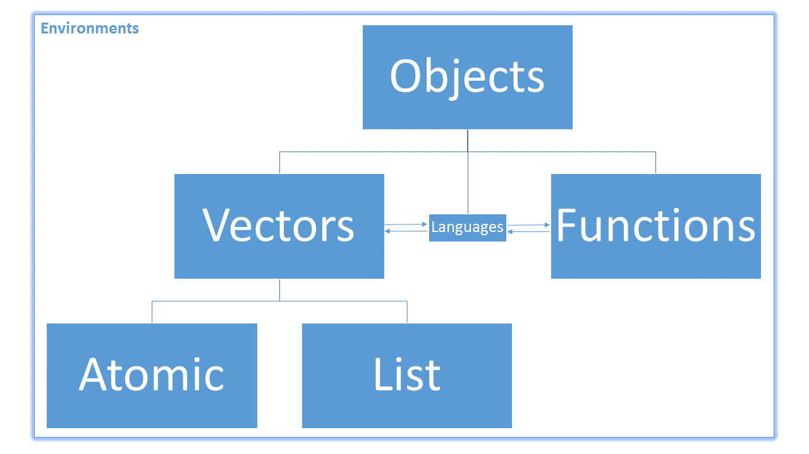
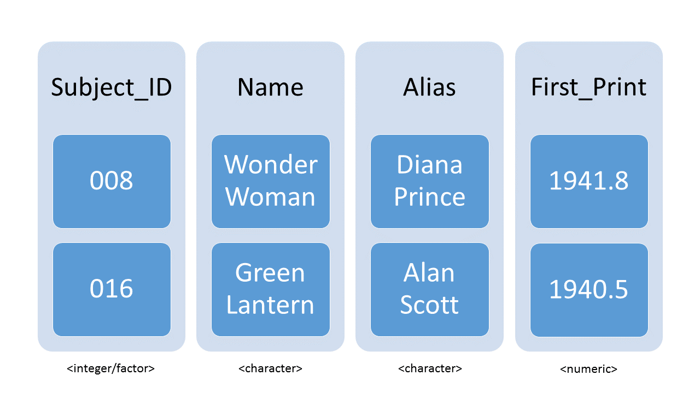
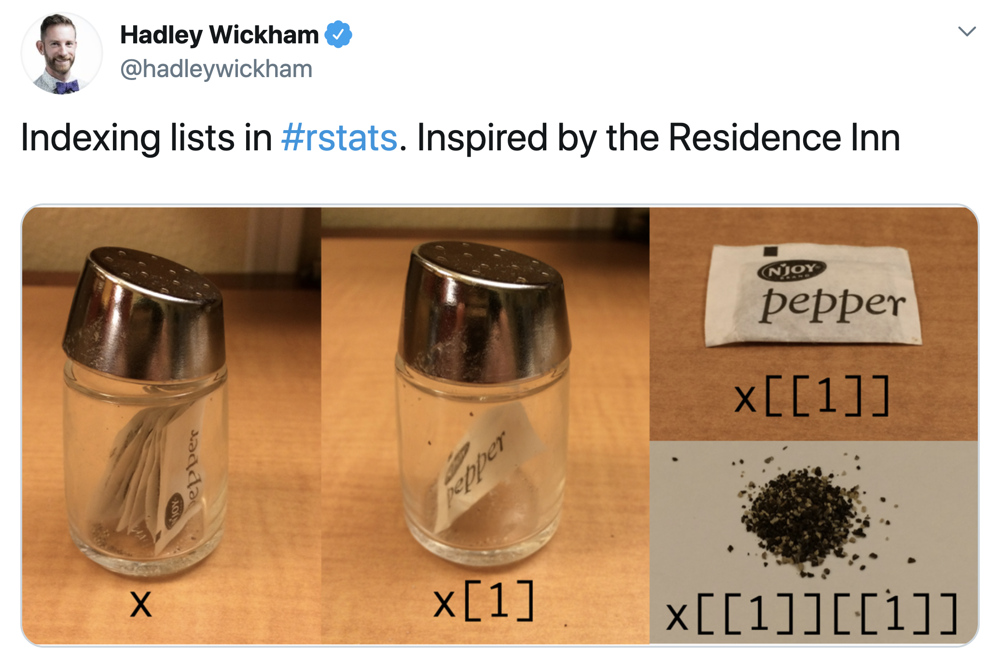

ages_int <- c(31, 29, 27, 25, 23, 21)
names_char <- c(
"Gabriel", "Britni", "Michael", "Christiana", "Olivia", "Hannah"
)
names(ages_int) <- names_charLesson 7: Lists and Tibbles
Gabriel Odom and Data Carpentry Collaborators
Review
What did we learn last class?
- Atomic Vectors
- Basic Subsetting
- Type Coercion
- Attributes
- Named Subsetting
- Factors
- Missing Values
Overview
First of all, I’d like to acknowledge once again the Data Carpentry instructors for the “R for Ecology” lesson. We worked on updating that lesson last year, so I did not write all of this lesson by myself. In this lesson, we will cover the following:
- Lists
- Tibbles and Data Frames
- Positional Subsetting
- Relational Subsetting
- Named Subsetting
Review of Objects
Recall that everything in R is an object. The objects in R are broken up primarily like this:

Also, because R is a vectorised language, most non-function objects we encounter are vectors. Vectors in R are broken into two main types: atomic and non-atomic. Atomic vectors mean that all of the elements in the vector have the same type or class. Non-atomic vectors are everything else. Last lesson, we worked on creating and subsetting atomic vectors.
Object Dimensions
The rules and techniques for subsetting data depend on two things:
- Is the object atomic or non-atomic? E.g., an integer vector vs a list.
- Is the object 1-dimensional or higher-dimensional? E.g., a list vs a tibble.
For these considerations, we use the class of the object to decide the proper subsetting rules (rather than the type).
Here is a table of example vector types, their dimensions, and their resulting classes (this is not exhaustive):
| Atomic | Non-Atomic | |
|---|---|---|
| 1-D | logical |
list |
| 2-D | matrix |
data.frame |
Lists: 1-D Non-Atomic Vectors
Example Data
Names and Ages
Last lesson, we had created a basic vector for my sibling’s ages, named with their first names.
Electronic ID Object
Also, recall the ID vector we created in the last lesson:
DrGabriel <- c(
Surname = "Odom",
FirstName = "Gabriel",
HighestDegrees = "PhD, ThD",
Age = 31,
City = "Pembroke Pines",
State = "FL",
MovedFrom = "TX",
timeEmployed = 2.1
)We discovered last lesson that the values for Age and timeEmployed were coerced from numeric to character information due to the restrictions of atomic vectors. However, non-atomic vectors are vectors such that the type / class of each element in the vector is not forced to be the same. So far, we have created ID vectors for ourselves, but these do not allow us to mix different classes of data. We need something more flexible.
Creating Lists
Lists are vectors that can have any class of object as its elements—even other lists! They are the opposite of atomic. We have seen one such example so far: the attributes of an atomic vector are a list:
attributes(DrGabriel)$names
[1] "Surname" "FirstName" "HighestDegrees" "Age"
[5] "City" "State" "MovedFrom" "timeEmployed" class(attributes(DrGabriel))[1] "list"Lists give us flexibility to create an ID vector that has different classes of information, including other vectors! We create a new list with the function list():
# Create a List
DrGabriel_ls <- list(
Surname = "Odom",
Forename = "Gabriel",
Male = TRUE,
City = "Pembroke Pines",
State = factor("FL", levels = state.abb),
CurrZIP = 33025,
MovedFrom = "TX",
Age = 31,
MaxDegree = c("PhD", "ThD"),
TimeEmpl = 2.1
)
# Inspect
DrGabriel_ls$Surname
[1] "Odom"
$Forename
[1] "Gabriel"
$Male
[1] TRUE
$City
[1] "Pembroke Pines"
$State
[1] FL
50 Levels: AL AK AZ AR CA CO CT DE FL GA HI ID IL IN IA KS KY LA ME MD ... WY
$CurrZIP
[1] 33025
$MovedFrom
[1] "TX"
$Age
[1] 31
$MaxDegree
[1] "PhD" "ThD"
$TimeEmpl
[1] 2.1If we want to inspect the internal structure of this list, we can see that the classes of our original atomic vectors have been preserved. There is no class coercion in a list.
str(DrGabriel_ls)List of 10
$ Surname : chr "Odom"
$ Forename : chr "Gabriel"
$ Male : logi TRUE
$ City : chr "Pembroke Pines"
$ State : Factor w/ 50 levels "AL","AK","AZ",..: 9
$ CurrZIP : num 33025
$ MovedFrom: chr "TX"
$ Age : num 31
$ MaxDegree: chr [1:2] "PhD" "ThD"
$ TimeEmpl : num 2.1As with the atomic vectors, we can also find what R thinks about lists and how R stores this information:
class(DrGabriel_ls)[1] "list"typeof(DrGabriel_ls)[1] "list"
Exercises
- Review constructing sequential integer vectors. Create a vector from -4 to -1 without the
c()function. - Use the help files to read about the
state.abbobject I used when making the factor for my current state. Did I create it? Where did it come from? - The
DrGabriel_lsobject itself contains an atomic vector of length 2. Is this still a 1-D object? Why or why not? - Update your ID card to a list format. Include an entry for at least two of your favourite foods as an atomic character vector.
- Open the R script you created last class. Make sure this script includes code to build the atomic vectors above, as well as the example ID lists.
Tibbles: 2-D Non-Atomic Vectors
A tibble is the representation of data in the format of a table where the columns are vectors that all have the same length. Because columns are vectors, each column must contain a single type of data (e.g., characters, integers, logicals, etc). For example, here is a figure depicting a tibble comprised of numeric and character atomic vectors.

Creating Tibbles
In order to use tibbles, we need functions from the tidyverse. A tibble can be created by hand, but most commonly we generate them by importing tabular / spreasheet data (with the functions read_csv() or read_delim(); more on these in a week or so).
library(tidyverse)We can create the same ID card as we did with the list() function, but in a rectangular / tabular form. We create a tibble with the tibble() function. Similar to the c() function, we can supply as many inputs as we want, as long as they are all atomic vectors with the same length (notice that I changed the “highest degrees” back to a single character because of this restriction).
# Create a Tibble
DrGabriel_df <- tibble(
Surname = "Odom",
FirstName = "Gabriel",
HighestDegrees = "PhD, ThD",
Age = 31,
City = "Pembroke Pines",
State = "FL",
MovedFrom = "TX",
TimeEmployed = 2.1
)
# Inspect
DrGabriel_df# A tibble: 1 × 8
Surname FirstName HighestDegrees Age City State MovedFrom TimeEmployed
<chr> <chr> <chr> <dbl> <chr> <chr> <chr> <dbl>
1 Odom Gabriel PhD, ThD 31 Pembroke … FL TX 2.1(Technically I could have left the degrees entry as an atomic vector with 2 entries, but the tibble() function would have to try to figure out what I meant. Sometimes it guesses correctly, sometimes not. We will discuss the tibble() function more in a few weeks.)
As with the atomic vectors, we can also find what R thinks about lists and how R stores this information:
class(DrGabriel_df)[1] "tbl_df" "tbl" "data.frame"typeof(DrGabriel_df)[1] "list"Notice that R still stores a tibble as a list (we see this from the typeof() function). In a tibble, the individual columns must have the same class and all columns must have the same length, but the entire data set often has different classes of data in each column. Here’s the example from the figure above.
heroes_df <- tibble(
subject_ID = factor(c("008", "016", "115", "027", "001")),
name = c(
"Wonder Woman", "Green Lantern", "Spider-Man", "Batman", "Superman"
),
alias = c(
"Diana Prince", "Alan Scott", "Peter Parker", "Bruce Wayne",
"Clark Kent / Kal-El"
),
city = c(
"Gateway City", "Capitol City", "New York City", "Gotham", "Metropolis"
),
male = c(FALSE, TRUE, TRUE, TRUE, TRUE),
heightCM = c(183.5, 182.9, 177.8, 188.0, 190.5),
weightKg = c(74.8, 91.2, 75.7, 95.3, 106.6),
firstRun = c(1941L, 1940L, 1962L, 1939L, 1938L)
)Notice that when I create this tibble, each of the entries (columns) are the same length (5 elements each), within each column the classes do not change (column heightCM is all numeric, column city is all character, etc.).
We check what this looks like:
heroes_df# A tibble: 5 × 8
subject_ID name alias city male heightCM weightKg firstRun
<fct> <chr> <chr> <chr> <lgl> <dbl> <dbl> <int>
1 008 Wonder Woman Diana Prince Gate… FALSE 184. 74.8 1941
2 016 Green Lantern Alan Scott Capi… TRUE 183. 91.2 1940
3 115 Spider-Man Peter Parker New … TRUE 178. 75.7 1962
4 027 Batman Bruce Wayne Goth… TRUE 188 95.3 1939
5 001 Superman Clark Kent / … Metr… TRUE 190. 107. 1938We see that the classes of the columns are displayed under the column names.
Exercise
Add the code to create the tibble above to your script from last lesson.
(OPTIONAL) Data Frames
Data frames are and have been the de facto data structure in R for most tabular data for over two decades. They are what people commonly used for statistics and plotting. However, tibbles are simply a modern hybrid of a table and a data frame, which includes many nice attributes, properties, and features. The main difference between tibbles and data frames is that data frames can only have columns of atomic vectors; the other restrictions are the same: only one class per column and all columns have the same length.
Moving forward, we will make use of tibbles, but you will most likely see older code that uses data frames as you learn more of R. We create the “antique” tibble with the data.frame() function.
# Create a Data Frame
heroes_OldDF <- data.frame(
subjectID = factor(c("008", "016", "115", "027", "001")),
name = c("Wonder Woman", "Green Lantern", "Spider-Man", "Batman", "Superman"),
alias = c(
"Diana Prince", "Alan Scott", "Peter Parker", "Bruce Wayne",
"Clark Kent / Kal-El"
),
city = c(
"Gateway City", "Capitol City", "New York City", "Gotham", "Metropolis"
),
male = c(FALSE, TRUE, TRUE, TRUE, TRUE),
heightCM = c(183.5, 182.9, 177.8, 188.0, 190.5),
weightKg = c(74.8, 91.2, 75.7, 95.3, 106.6),
firstRun = c(1941L, 1940L, 1962L, 1939L, 1938L)
)
# Inspect
heroes_OldDF subjectID name alias city male heightCM
1 008 Wonder Woman Diana Prince Gateway City FALSE 183.5
2 016 Green Lantern Alan Scott Capitol City TRUE 182.9
3 115 Spider-Man Peter Parker New York City TRUE 177.8
4 027 Batman Bruce Wayne Gotham TRUE 188.0
5 001 Superman Clark Kent / Kal-El Metropolis TRUE 190.5
weightKg firstRun
1 74.8 1941
2 91.2 1940
3 75.7 1962
4 95.3 1939
5 106.6 1938If you want some more details on this data frame, use the str() function:
str(heroes_OldDF)'data.frame': 5 obs. of 8 variables:
$ subjectID: Factor w/ 5 levels "001","008","016",..: 2 3 5 4 1
$ name : chr "Wonder Woman" "Green Lantern" "Spider-Man" "Batman" ...
$ alias : chr "Diana Prince" "Alan Scott" "Peter Parker" "Bruce Wayne" ...
$ city : chr "Gateway City" "Capitol City" "New York City" "Gotham" ...
$ male : logi FALSE TRUE TRUE TRUE TRUE
$ heightCM : num 184 183 178 188 190
$ weightKg : num 74.8 91.2 75.7 95.3 106.6
$ firstRun : int 1941 1940 1962 1939 1938
Exercises
- What are some differences between tibbles and data frames that you can find?
- Check the help file of the
data.frame()function to find out how to preserve character information. What option should you add to the code above? - Last class, we discussed naming conventions. Are the names within my vectors consistent? Why or why not? What might I do to make them better?
Inspecting Tibbles
We already saw how the printing the tibble and caling the str() function can be useful to check the content and the structure of data. Because we want to see something more interesting than our ID card, let’s take a look at the mpg data set from last week.
mpg# A tibble: 234 × 11
manufacturer model displ year cyl trans drv cty hwy fl class
<chr> <chr> <dbl> <int> <int> <chr> <chr> <int> <int> <chr> <chr>
1 audi a4 1.8 1999 4 auto… f 18 29 p comp…
2 audi a4 1.8 1999 4 manu… f 21 29 p comp…
3 audi a4 2 2008 4 manu… f 20 31 p comp…
4 audi a4 2 2008 4 auto… f 21 30 p comp…
5 audi a4 2.8 1999 6 auto… f 16 26 p comp…
6 audi a4 2.8 1999 6 manu… f 18 26 p comp…
7 audi a4 3.1 2008 6 auto… f 18 27 p comp…
8 audi a4 quattro 1.8 1999 4 manu… 4 18 26 p comp…
9 audi a4 quattro 1.8 1999 4 auto… 4 16 25 p comp…
10 audi a4 quattro 2 2008 4 manu… 4 20 28 p comp…
# ℹ 224 more rowsHere is a non-exhaustive list of functions to get a sense of the content/structure of your data. Note that—while these functions are very useful, we get most of this information for free if we are using tibbles (one of the main reasons we use tibbles instead of the older data frame structure).
- Structure:
str(mpg): a list of the vectors used to create thempgdata set, their classes, and their lengths (this includes excerpts from most of the functions below)
- Size:
dim(mpg): a vector with the number of rows in the first element, and the number of columns as the second element (these are the dimensions of the object)nrow(mpg): the number of rowsncol(mpg): the number of columns
- Content:
head(mpg): the first 6 rowstail(mpg): the last 6 rowssummary(mpg): summary statistics for each column
- Names:
names(mpg)orcolnames(mpg): the column namesrownames(mpg): the row names
Note: the head, tail, summary, and names functions are “generic”; that is, they can be used on most other types of objects besides tibbles, including data frames and even atomic vectors. The dim, nrow, and ncol functions are also generic, but they are only applicable to rectangular, layered, or tabular data.
Exercise (OPTIONAL)
Tibbles include a lot of meta-data about themselves when they are printed. Which of the above functions would you have to use to find out the same information about a regular data frame?
Positional Subsetting
Positive Positional Subsetting
Lists
Let’s extract the eighth element (my age) of a non-atomic vector:
DrGabriel_ls[8]$Age
[1] 31Remember that [ takes in the position of the element of the vector and returns the contents at that position. One of the special things about non-atomic vectors (lists) is that their sub-contents are themselves lists.
class(DrGabriel_ls[8])[1] "list"In its list form, this value doesn’t help us very much. For instance, we can’t find my age in months with this:
DrGabriel_ls[8] * 12Error in DrGabriel_ls[8] * 12: non-numeric argument to binary operatorIn order to extract the contents of the inner list (the contents of the sixth position of DrGabriel_ls), we need to use a second-level extractor:
DrGabriel_ls[[8]][1] 31DrGabriel_ls[[8]] * 12[1] 372This is the primary difference between atomic and non-atomic positional subsetting. Consider this figure:

The original object x is a list (the pepper container), and the first element of x is also a list (x[1]; still the pepper container, but now with only one packet of pepper). The contents of the first element’s inner list is an atomic vector (x[[1]]; the packet of pepper). To extract the contents of the x[[1]] atomic vector (the pepper), we subset one last time. Because x[[1]] itself is atomic, we can subset it by either [ or [[; common standards have use use [ for atomic vectors, however.
Exercises
- Extract the first through third elements of the ID vector you created above using the
[function. - Extract the first through third elements of the ID vector you created above using the
[[function. Does this work? What is different? Why?
Tibbles
To extract the element in the second row and third column from a tibble, we can type (using row, column notation):
heroes_df[2, 3]# A tibble: 1 × 1
alias
<chr>
1 Alan ScottTo extract the third and fourth row within the first and third column:
heroes_df[3:4, c(1, 3)]# A tibble: 2 × 2
subject_ID alias
<fct> <chr>
1 115 Peter Parker
2 027 Bruce Wayne To extract an entire column:
heroes_df[, 2]# A tibble: 5 × 1
name
<chr>
1 Wonder Woman
2 Green Lantern
3 Spider-Man
4 Batman
5 Superman
Exercises
- Extract the second column for all rows. What is the class of this object? Do you think this is connected to the differences between
[and[[for a list? Why or why not? - What is the class of the second row, third column of this tibble?
- Look up the help file for the
pull()function. How could this be useful?
Negative Positional Subsetting
Lists
Using the same negative subsetting framework, I’m going to “de-identify” my electronic ID card.
DrGabriel_ls[-(1:2)]$Male
[1] TRUE
$City
[1] "Pembroke Pines"
$State
[1] FL
50 Levels: AL AK AZ AR CA CO CT DE FL GA HI ID IL IN IA KS KY LA ME MD ... WY
$CurrZIP
[1] 33025
$MovedFrom
[1] "TX"
$Age
[1] 31
$MaxDegree
[1] "PhD" "ThD"
$TimeEmpl
[1] 2.1
Exercises
- Remove the age and ZIP from your ID vector.
- Can you use the
[[function for negative subsetting with a list? Why not? Hint: think back to theclassof the objects returned by the[function vs the[[function.
Tibbles
For tibbles, negative subsetting uses the same row, column notation as it does for positive subsetting.
heroes_df[-1, ]# A tibble: 4 × 8
subject_ID name alias city male heightCM weightKg firstRun
<fct> <chr> <chr> <chr> <lgl> <dbl> <dbl> <int>
1 016 Green Lantern Alan Scott Capi… TRUE 183. 91.2 1940
2 115 Spider-Man Peter Parker New … TRUE 178. 75.7 1962
3 027 Batman Bruce Wayne Goth… TRUE 188 95.3 1939
4 001 Superman Clark Kent / … Metr… TRUE 190. 107. 1938heroes_df[-c(1, 3), -c(1, 3, 4)]# A tibble: 3 × 5
name male heightCM weightKg firstRun
<chr> <lgl> <dbl> <dbl> <int>
1 Green Lantern TRUE 183. 91.2 1940
2 Batman TRUE 188 95.3 1939
3 Superman TRUE 190. 107. 1938
Exercises
- Combine postive and negative subsetting to create a table subset comparing the height of Wonder Woman and Green Lantern. Remove all other rows and columns.
- Combine postive and negative subsetting to create a table subset comparing each hero’s city and first publication date. Create a hypothesis to explain what you see.
Relational Subsetting
The main idea of relational subsetting is to keep values from tabular data based on their comparison to another set of values. This are the steps:
- Extract a subset of a tibble using your preferred subsetting rules
- Using the logical comparison operators, reduce the subset you extracted in step 1 to a logical atomic vector.
- Subset the full data using this logical atomic vector.
Boolean Subsetting
Because relational subsetting is Boolean (logical) subsetting with an additional step, we first discuss how logical subsetting rules work for non-atomic vectors. For lists, these rules work the same for lists in one dimension as they do for atomic vectors in one dimension.
Tibbles, however, are different. Recall that tibbles have positional subsetting properties through the row, column syntax and also the positional subsetting properties of lists. These properties hold true for logical subsetting.
Row and Column Subsetting
We can create logical atomic vectors of the same lengths as the number of rows and columns of the tibble (as returned by the dim() function).
# Dimension of the tibble:
dim(heroes_df)[1] 5 8# Logical vector to match the rows (keep the lat two):
c(rep(FALSE, 3), rep(TRUE, 2))[1] FALSE FALSE FALSE TRUE TRUE# Logical vector to match the columns (keep the last four):
rep(c(FALSE, TRUE), each = 4)[1] FALSE FALSE FALSE FALSE TRUE TRUE TRUE TRUE# Subset the tibble:
heroes_df[c(rep(FALSE, 3), rep(TRUE, 2)), rep(c(FALSE, TRUE), each = 4)]# A tibble: 2 × 4
male heightCM weightKg firstRun
<lgl> <dbl> <dbl> <int>
1 TRUE 188 95.3 1939
2 TRUE 190. 107. 1938List Subsetting
Because tibbles are also lists, we can subset the columns of the tibble using a logical atomic vector with length equal to the number of columns. This code will let us keep every other column starting with the second column:
heroes_df[rep(c(FALSE, TRUE), times = 4)]# A tibble: 5 × 4
name city heightCM firstRun
<chr> <chr> <dbl> <int>
1 Wonder Woman Gateway City 184. 1941
2 Green Lantern Capitol City 183. 1940
3 Spider-Man New York City 178. 1962
4 Batman Gotham 188 1939
5 Superman Metropolis 190. 1938
Exercise
Subset the tibble by every other row and column.
Character Set Membership
For numeric and logical atomic vectors, we can make easy Boolean comparisons. “Is this value TRUE?” “Are these numbers less than 0?” Unfortunately, comparisons for character vectors are not as easy. We need new functions to measure if one character string belongs to a character vector. However, character set membership operators share this with other comparison operators: they must return logical values.
Exact Matching
If we want to find if one string is an element of a set of strings exactly, we can use the “infix” operator: %in%. This is helpful if you have many possible spellings or abbriviations of the same word or idea:
"Florida" %in% c("FL", "Fl", "fl", "Florida", "florida")[1] TRUE"Georgia" %in% c("FL", "Fl", "fl", "Florida", "florida")[1] FALSEThis matching is exact: the character string on the left of %in% must match exactly to one of the elements of the character vector on the right. This means the following checks will fail:
"Florida State" %in% c("FL", "Fl", "fl", "Florida", "florida")[1] FALSE"Florida" %in% c("FL", "Fl", "fl", "State of Florida", "florida")[1] FALSEPartial Matching
If we want to find if a string is part of another string, we use the string detection function: str_detect(). This function is from the stringr package, which is part of the tidyverse.
str_detect(
string = c("FL", "Fl", "fl", "State of Florida", "florida", "Florida"),
pattern = "Florida"
)[1] FALSE FALSE FALSE TRUE FALSE TRUEWe know that the labels "State of Florida" and "Florida" match our search, but "florida" does not.
Relational Subsetting for Tibbles
The tibble uses both the row, column and list subsetting rules, which gives it more flexibility than lists alone. Finally, we can use relational subsetting to get at some powerful results.
Numerical Relationships
If we would like to see which superheroes were in print prior to the US involvement in WWII, we will use a numeric comparison of the first print run year vs 1941.
# Step 1: subset the first print year of the superheroes:
heroes_df[["firstRun"]][1] 1941 1940 1962 1939 1938# Step 2: compare these print years to the start of WWII for the US:
heroes_df[["firstRun"]] <= 1941[1] TRUE TRUE FALSE TRUE TRUE# Step 3: subset the tibble to return only the pre-war heroes
heroes_df[heroes_df[["firstRun"]] <= 1941, ]# A tibble: 4 × 8
subject_ID name alias city male heightCM weightKg firstRun
<fct> <chr> <chr> <chr> <lgl> <dbl> <dbl> <int>
1 008 Wonder Woman Diana Prince Gate… FALSE 184. 74.8 1941
2 016 Green Lantern Alan Scott Capi… TRUE 183. 91.2 1940
3 027 Batman Bruce Wayne Goth… TRUE 188 95.3 1939
4 001 Superman Clark Kent / … Metr… TRUE 190. 107. 1938Character Relationships
How many heroes include the name “man” somewhere in their name? (We will learn more about the str_detect() function in the stringr:: lesson; for now, note that it returns TRUE or FALSE values.)
# Step 1: subset the names of the superheroes:
heroes_df[["name"]][1] "Wonder Woman" "Green Lantern" "Spider-Man" "Batman"
[5] "Superman" # Step 2: compare these names to the character strings "man":
str_detect(string = heroes_df[["name"]], pattern = "man")[1] TRUE FALSE FALSE TRUE TRUE# Step 3: subset the tibble to return only the heroes with "man" in their names
heroes_df[str_detect(string = heroes_df[["name"]], pattern = "man"), ]# A tibble: 3 × 8
subject_ID name alias city male heightCM weightKg firstRun
<fct> <chr> <chr> <chr> <lgl> <dbl> <dbl> <int>
1 008 Wonder Woman Diana Prince Gate… FALSE 184. 74.8 1941
2 027 Batman Bruce Wayne Goth… TRUE 188 95.3 1939
3 001 Superman Clark Kent / K… Metr… TRUE 190. 107. 1938
Exercises
- In the example above, why couldn’t we find Spider-Man?
- Find all the heroes who’s home city has the word “City” in it.
- Because the columns of a tibble are usually a 1-D atomic vector, we can subset 1-D atomic vectors using Steps 2 and 3 only. Find who among my siblings are under 25 years old (use the named
ages_intvector from last lesson). - Use compound logic (recall the AND and OR symbols) to find the superheroes with less than average height and greater than average weight.
- Recall that code-writing best practices include that lines should not be longer than 80 characters wide. Your solution for the last question was most likely longer than that. What can you do to make the lines shorter and more easily readable?
Lists
The rules for 1-dimensional non-atomic vectors are very different. The main difference is that most relational functions, such as str_detect(), %in%, <, and others don’t always work on lists.
Exercises
- Attempt to use logical subsetting to extract the following components of your ID vector:
- Any elements less than 150 (this is a good cutoff for age)
- Your last name using the
%in%function - Your last name using the
str_detectfunction - Your last name using the
==function
- For the last three parts of Exercise 1, what were the major differences?
- When you received warning or error messages, can you explain what they mean?
Named Subsetting
Lists
We know that the electronic ID list we made has names, but we can check to be sure:
names(DrGabriel_ls) [1] "Surname" "Forename" "Male" "City" "State" "CurrZIP"
[7] "MovedFrom" "Age" "MaxDegree" "TimeEmpl" Therefore, we can extract the contents of this list by position name:
DrGabriel_ls["Age"]$Age
[1] 31
Exercises
- Extract the last name of your ID object with the
[function. What is the class of this object? - Extract the last name of your ID object with the
[[function. What is the class of this object? - If you need to extract your first name, last name, and age, should you use the
[or the[[function? Why?
Tibbles
All of the same name-based extraction / subsetting rules that work on the names of list elements work on tibbles, because a tibble is a type of list (check this with the typeof() function):
heroes_df["alias"]# A tibble: 5 × 1
alias
<chr>
1 Diana Prince
2 Alan Scott
3 Peter Parker
4 Bruce Wayne
5 Clark Kent / Kal-Elheroes_df[["alias"]][1] "Diana Prince" "Alan Scott" "Peter Parker"
[4] "Bruce Wayne" "Clark Kent / Kal-El"However, we also get the column-based subsetting options too!
heroes_df[, "alias"]# A tibble: 5 × 1
alias
<chr>
1 Diana Prince
2 Alan Scott
3 Peter Parker
4 Bruce Wayne
5 Clark Kent / Kal-El
Exercises
- Extract the names of the heroes with the
[function. What is the class of this object? - Extract the names of the heroes with the
[function usingrow, columnsyntax. What is the class of this object? - Extract the names of the heroes with the
[[function. What is the class of this object? - If you need to extract the heroes’ name, height, and weight, should you use the
[or the[[function? Why? - Using both
[and[[, extract from the tibble a column that doesn’t exist,"Publisher"for instance. What happens in these two cases?
The $ Operator
There is one other subsetting operator that only works for name-based subsetting of non-atomic vectors, the $ function. We can subset any object of type list with the $ function in the following manner:
# From a list
DrGabriel_ls$MaxDegree[1] "PhD" "ThD"# From a tibble
heroes_df$name[1] "Wonder Woman" "Green Lantern" "Spider-Man" "Batman"
[5] "Superman" What is the class of the object returned by $?
class(heroes_df$city)[1] "character"In this case, this is similar to the output of the pull() function we saw earlier.
Symbol Objects
This function is very different. Instead of taking in the name of the element as a character string, it takes in the name as a symbol. If you remember our flowchart on objects from last class, recall that there was a small box connecting “Functions” to “Vectors” labelled “Languages”; symbols are language objects: they help R connect functions to vectors. You have technically used symbols since the second day of class. Consider this example:
myIntegers <- 1:10
mean(x = myIntegers)Notice that I did not type myIntegers in quotes (as "myIntegers"). When R sees a reference to something other than all letters, crazy symbols, or TRUE / FALSE, R interprets what you typed as a symbol to be evaluated (think back to our rules for naming objects in lesson 5). R will look in your Global Environment for the object named what you typed. In the example above, R isn’t taking the mean of the letters myIntegers, but rather replacing that symbol with the atomic vector 1:10.
Symbol Subsetting
We have seen this behaviour before, when we created plots with ggplot. The aes() function took in displ and hwy as symbols, and looked for objects with those names in the supplied mpg data set instead of in the Global environment. Because this is a very complex but powerful tool, we will return to it in a few lessons.
Exercises
- Extract the non-existent
Publishercolumn from theheroes_dftibble using the$function. What happens? - Find all the heroes who’s home city has the word “City” in it using the
[or the$functions (instead of the[[function). Remember that$takes in symbols instead of character strings. What is different? Did you expect some of this behaviour based on the list exercises?